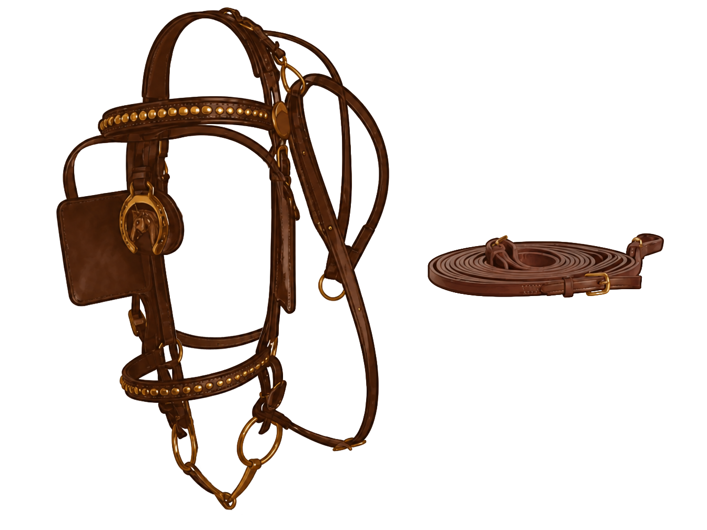
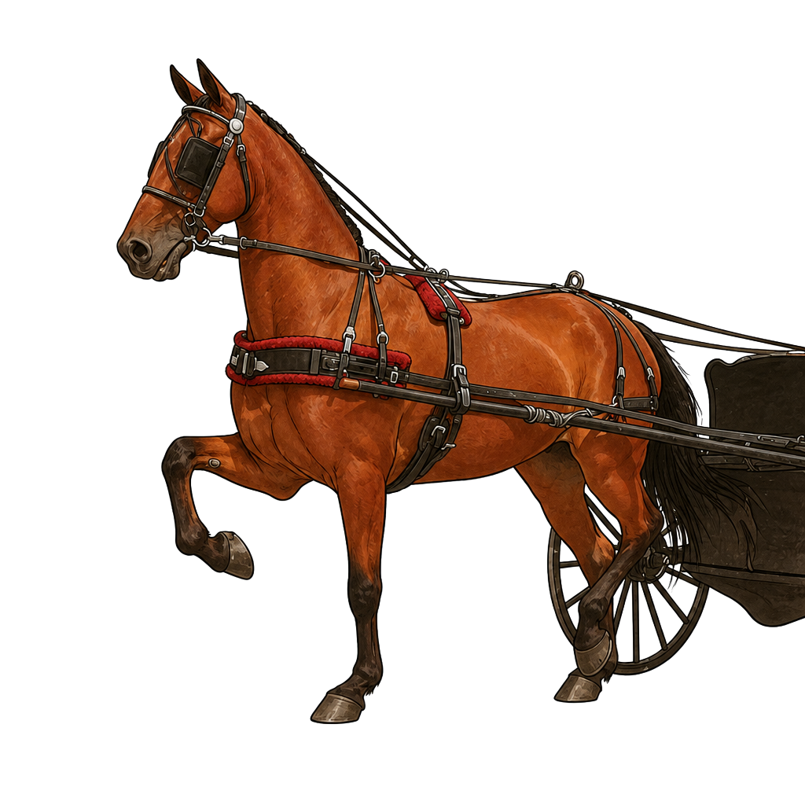

Parts of the Driving Harness
A driving harness connects the horse to the vehicle and manages pulling, holding back, and balance. Click any dot or label to learn what each part does.

Parts of the Driving Bridle
A driving bridle guides the horse from behind and usually includes blinkers to help the horse focus forward. Click any dot or label to learn about each part.

The Harness on the Horse
Every piece of the harness and bridle together on the horse. Click any dot or label to see what it is and what it does.
